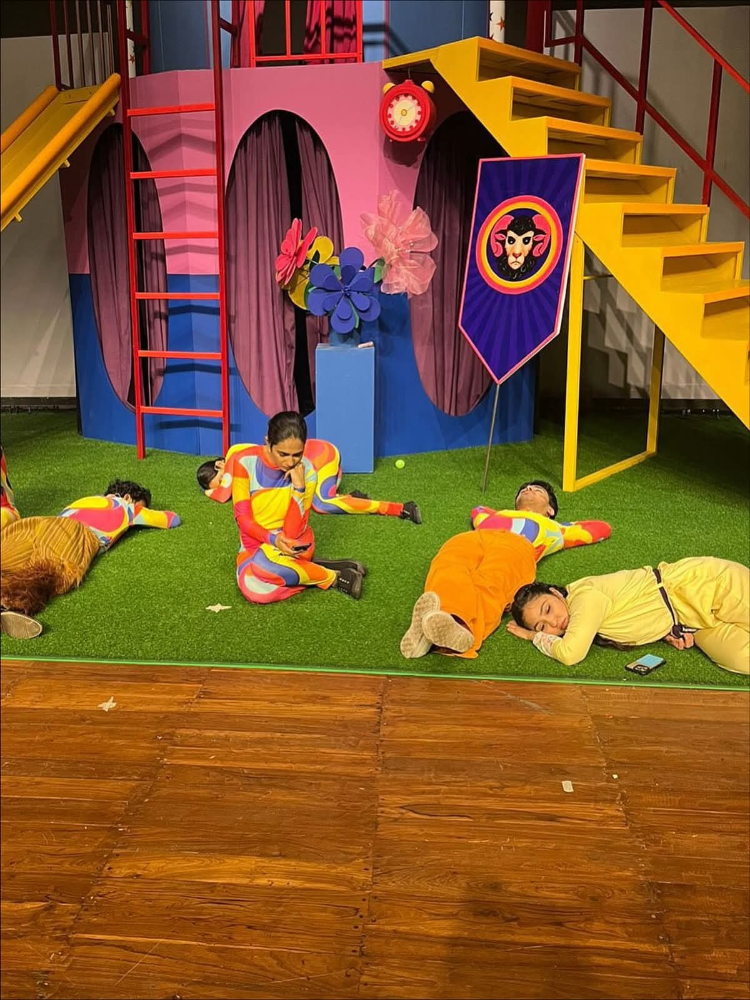
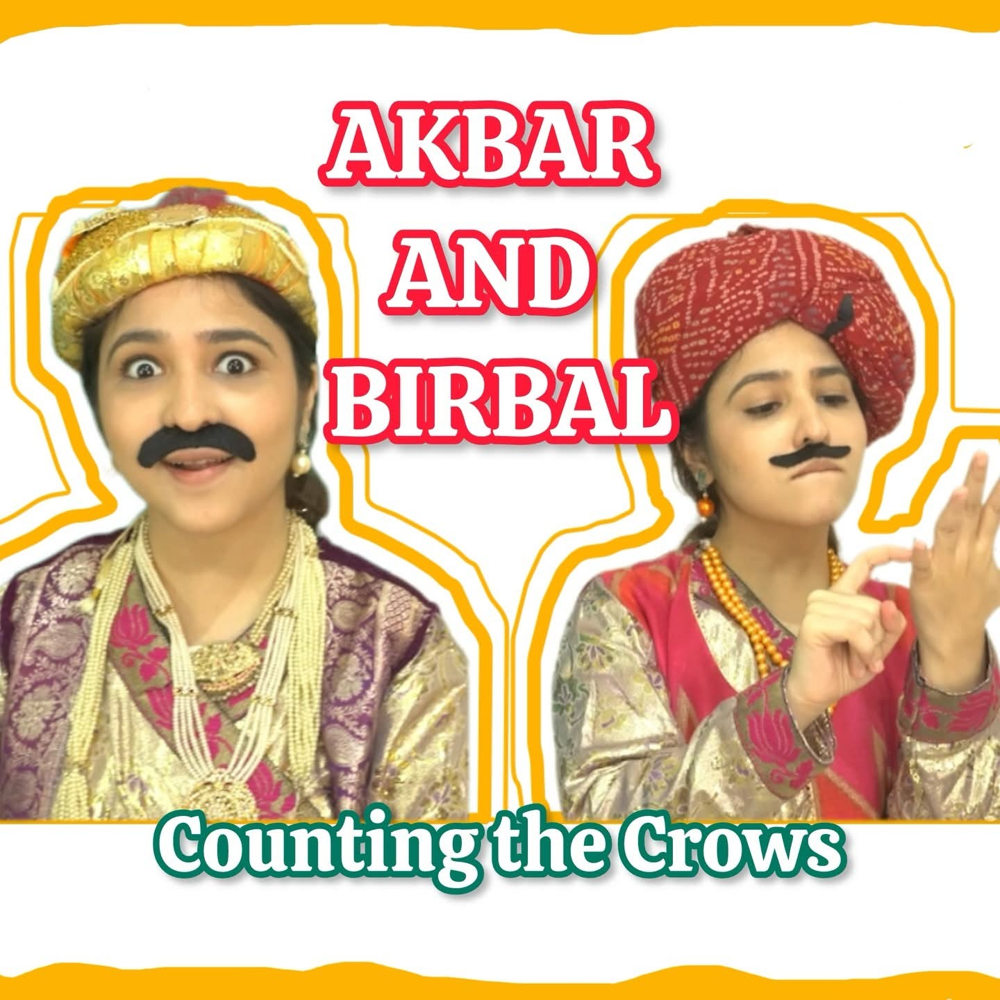

Folktales & legends
Explore ideas, cultures and characters through tales from around the world.
A folktale opens a door to another culture. A festival story starts a conversation. Make time to watch, wonder and imagine together.
Create a story for your audience
A colourful family theatre set
Explore ideas, cultures and characters through tales from around the world.
Pause at the challenge, offer your own answer and compare it with Birbal’s. A story becomes a shared thinking game.
Discover the stories behind festivals and traditions through engaging performance and screen-based storytelling.
Discuss storytelling for a library, holiday programme, community gathering or family day, with participation shaped around the group.
For a live experience, tell us the age group, audience size, setting and theme. For stories to watch together, explore our YouTube channel.

Discover stories on the TokTales YouTube channel, or talk to us about a live experience for your community. For parents and educators, a story can be the beginning of a much longer conversation.
Explore the storytelling experienceFor a live experience, tell us the age group, audience size, setting and theme. For stories to watch together, explore our YouTube channel.
Let’s create your story